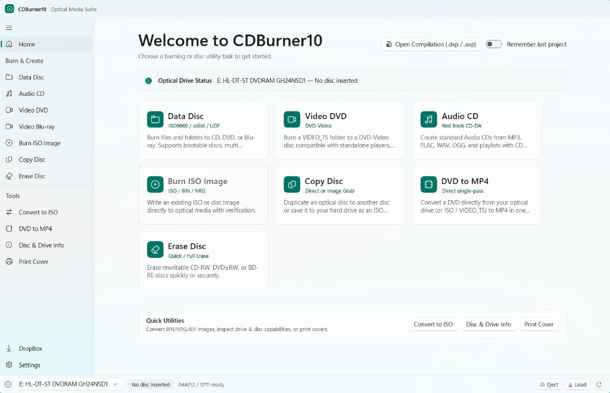

Data Discs, ISO & Bootable Media
Burn ISO9660/Joliet and UDF 1.02–2.60 discs with El Torito boot support, multi-session import, disc spanning, sector-by-sector verification, and BIN/NRG/B5I to ISO conversion.
Built on .NET 10 and WinUI 3 with Mica Dark & Light Mode. Burn data discs, Audio CDs with CD-Text, MP4/MKV Video DVDs, and recover unfinalized DVDs — with zero adware and zero closed-source DLLs.

Powered by Windows IMAPI2 and pure-C# SPTI SCSI MMC-3/5, CDBurner10 replaces aging 32-bit burning suites with a fast, transparent, open-source native app.
Burn ISO9660/Joliet and UDF 1.02–2.60 discs with El Torito boot support, multi-session import, disc spanning, sector-by-sector verification, and BIN/NRG/B5I to ISO conversion.
Recover footage from open or unfinalized DVD-R, DVD+R, and DVD-RW camcorder and recorder discs using raw MPEG-2 PS sector scanning — no Windows Explorer lockups.
Read the Unfinalized DVD Guide →Author standard PAL/NTSC Video DVDs from MP4 or MKV files with UDF 1.02 bridge and clean, unstretched rendering of embedded (SRT, ASS, VobSub, PGS) and external .srt subtitles.
Burn gapless SAO/DAO-96 or TAO Audio CDs with CD-Text, ReplayGain, crossfading, and CUE/M3U/WPL/NRA playlists, or rip CD-DA tracks cleanly to disk.
Read the Audio CD Guide →Navigation-driven DVD ripping via 64-bit libdvdnav + libdvdread + libdvdcss with ARccOS/bad-sector bypass, bwdif deinterlacing, and NVENC/QSV/AMF hardware H.264.
Imports legacy .dxp / .axp compilations and UserSettings.ini, and ships with cdbxpcmd.exe CLI parity for automated burning scripts.
Built from scratch for modern 64-bit Windows without bundled installers or proprietary burning SDKs.
| Capability | CDBurner10 (v10.5.9) | Legacy Freeware Burners |
|---|---|---|
| License & Transparency | 100% Open-Source (GPLv3), zero adware | Closed-source; often bundled with offers |
| Architecture & UI | Native 64-bit .NET 10 + WinUI 3 (Mica Dark/Light) | Aging 32-bit WinForms / legacy DPI scaling |
| Unfinalized DVD Recovery | Built-in raw MPEG-2 PS sector scanner | Not supported |
| DVD Ripping & MP4 Authoring | libdvdnav/libdvdcss + GPU H.264 + subtitle rendering | Requires separate third-party tools |
| CLI Automation | cdbxpcmd.exe parity included |
Varies / legacy flags only |
cdbxpcmd.exeAutomate backups, ISO burning, and DVD-to-MP4 conversions directly from PowerShell or batch scripts.
cdbxpcmd.exe --list-drives
cdbxpcmd.exe --burn-iso -device:0 -file:backup.iso -verify
cdbxpcmd.exe --burn-data -device:0 -folder:C:\Archive -name:ARCHIVE_2026
cdbxpcmd.exe --dvd-to-mp4 -device:0 -output:C:\Videos\movie.mp4